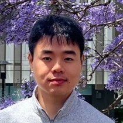

Director
Associate Professor Dong Yuan
School of Electrical and Computer Engineering, The University of Sydney
Dong Yuan’s research spans distributed systems, cloud computing and mobile computing.
Director
School of Electrical and Computer Engineering, The University of Sydney
Dong Yuan’s research spans distributed systems, cloud computing and mobile computing.
Yuning’s research focuses on efficient AI inference, from GPU scheduling and resource management for AI agents and multimodal models to on-board inference on power-constrained satellites.

Yongkun’s research focuses on robust machine learning and computer vision under distribution shifts, including domain-aware learning, class imbalance, federated learning, and online adaptation.
Chenghao’s research focuses on electromagnetic wave propagation, ray tracing, and wireless sensing and communications. He also works on embedded systems, robot control, and machine learning.
Assistant Professor, Institute of Automation, Chinese Academy of Sciences
Zao’s research focuses on multimodal perception and causal prediction for dynamic physical systems. He earned his PhD in artificial intelligence at the University of Sydney in 2024.
Lecturer, University of Southern Queensland
Nan’s research focuses on the intersection of AI and distributed systems, particularly federated learning and cloud computing. She earned her PhD in computer science at the University of Sydney in 2024.
Senior Research Engineer, Shenzhen Smart City Technology Development Group Co., Ltd.
Zhongzheng’s research focuses on world models, spatiotemporal intelligence, and AI-driven simulation and decision-making. He earned his PhD in software engineering at the University of Sydney in 2024. His work has appeared in venues including ICSE, ACM SIGCOMM, TDSC, and CAIT.
Postdoctoral Researcher, Sun Yat-sen University
Xuanyu’s research focuses on distributed self-supervised learning and representation learning. He earned his PhD in engineering at the University of Sydney in 2026. His work has appeared at ICLR, AAAI, and AISTATS, as well as in Machine Learning.
Postdoctoral Research Associate, Faculty of Engineering, The University of Sydney
Yanli’s research focuses on trustworthy AI and bioinformatics. Yanli earned a PhD from the University of Sydney in 2024.
Research Assistant, State Key Laboratory of Environmental Criteria and Risk Assessment, Chinese Research Academy of Environmental Sciences
Yuchen’s research focuses on quantitative environmental assessment, particularly hydrology. He combines remote sensing, field data and simulation modelling to develop tools for these assessments.